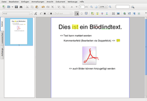
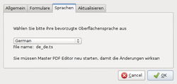

Master PDF Editor
Dieser Artikel wurde für die folgenden Ubuntu-Versionen getestet:
Ubuntu 16.04 Xenial Xerus
Ubuntu 14.04 Trusty Tahr
Zum Verständnis dieses Artikels sind folgende Seiten hilfreich:
Master PDF Editor  ist ein plattformübergreifendes, aber nicht quelloffenes Programm zur Anzeige und Bearbeitung von PDF- und XPS-Dateien (im Rahmen dieses Artikel wurde nur der Umgang mit PDF-Dateien getestet). Die kostenfreie Programmnutzung ist unter Linux nur zu nicht-kommerziellen Zwecken gestattet. Zur gewerblichen Nutzung kann man eine kostenpflichtige kommerzielle Lizenz erwerben
ist ein plattformübergreifendes, aber nicht quelloffenes Programm zur Anzeige und Bearbeitung von PDF- und XPS-Dateien (im Rahmen dieses Artikel wurde nur der Umgang mit PDF-Dateien getestet). Die kostenfreie Programmnutzung ist unter Linux nur zu nicht-kommerziellen Zwecken gestattet. Zur gewerblichen Nutzung kann man eine kostenpflichtige kommerzielle Lizenz erwerben  . Bis zur Version 3.5.81 war die Linux-Version für nicht-kommerzielle Zwecke ohne Einschränkungen nutzbar. Seit der Version 3.6.00 ist auch bei nicht-kommerzieller Nutzung des Programms eine Lizenz erforderlich, um das Programm uneingeschränkt nutzen zu können.
. Bis zur Version 3.5.81 war die Linux-Version für nicht-kommerzielle Zwecke ohne Einschränkungen nutzbar. Seit der Version 3.6.00 ist auch bei nicht-kommerzieller Nutzung des Programms eine Lizenz erforderlich, um das Programm uneingeschränkt nutzen zu können.
Funktionen:
Vorhandene PDF- und XPS-Dateien bearbeiten/kommentieren oder neue erstellen
Bearbeiten/Hinzufügen von Lesezeichen bei PDF-Dateien
Ent-/Verschlüsseln von PDF-Dateien und Kontrolle der Nutzerrechte
XPS-Dateien in PDF konvertieren
PDF-Formularfunktionen (Schaltflächen, Checkboxen, Listen, etc.) ergänzen
Import/Export einzelner PDF-Seiten in verschiedene Grafikformate (BMP, JPG, PNG und TIFF)
Zusammengefasst kann man sagen, dass sich mit dem Programm der ursprüngliche Zweck von PDF-Dateien wirkungsvoll aushebeln lässt. Wer bisher Rechnungen oder ähnliches als PDF verschickt hat – in der Annahme, beim Empfänger sind nur Betrachten und Ausdrucken möglich – wird sich unter Umständen umstellen müssen.
Installation¶
 Das Programm ist nicht in den offiziellen Paketquellen enthalten. Die Installation [1] ist daher nur über ein Fremdpaket möglich.
Das Programm ist nicht in den offiziellen Paketquellen enthalten. Die Installation [1] ist daher nur über ein Fremdpaket möglich.
Fremdpaket¶
Die jeweils aktuellste Version steht über die Homepage  als DEB-Paket zur Verfügung, das heruntergeladen und manuell installiert werden kann [2].
als DEB-Paket zur Verfügung, das heruntergeladen und manuell installiert werden kann [2].
Hinweis!
Fremdpakete können das System gefährden.
Anmerkung: Während die 32-bit-Version noch Qt 4 nutzt, erfordert das 64-bit-Paket Qt 5!
Umfang des Test auf 16.04 ist hier beschrieben
Manuell¶
Ein vorkompiliertes Binärarchiv im .tar.gz-Format kann ebenfalls über die Homepage heruntergeladen werden. Anschließend muss dieses nur entpackt [3] werden. Das Programm steht dann sofort zur Verfügung.
Hinweis!
Fremdsoftware kann das System gefährden.
Anmerkung: Evtl. fehlende Abhängigkeiten müssen selbst nachinstalliert werden, so dass diese Methode nur Fortgeschrittenen empfohlen wird.
Einen Programmstarter bzw. Menü-Eintrag [3] muss man sich bei dieser Installationsvariante selbst erstellen und z.B. als ~/.local/share/applications/masterpdfeditor.desktop speichern. Das folgende Beispiel für den Inhalt muss noch an zwei Stellen angepasst werden (MASTER_PDF_EDITOR-ORDNER) [4][5]:
[Desktop Entry] Version=1.0 Encoding=UTF-8 Type=Application Name=Master PDF Editor Comment=PDF editor Comment[de]=Editor für PDF-Dateien Exec=MASTER_PDF_EDITOR-ORDNER/pdfeditor Icon=MASTER_PDF_EDITOR-ORDNER/pdfeditor.png Terminal=false Categories=Office; MimeType=application/pdf; StartupNotify=true
Wie man eine systemweite Installation vornimmt, wird im Artikel opt erklärt.
Verwendung¶
Bei Ubuntu-Varianten mit einem Anwendungsmenü startet man das Programm über den Eintrag "Büro -> Master PDF Editor" [6]. Alternativ kann man den Befehl pdfeditor verwenden.
Obwohl man grundsätzlich eine PDF-Datei mit Master PDF Editor erstellen kann, wird man sich in der Praxis auf Änderungen oder Kommentare beschränken, da die Texteingabe relativ unkomfortabel ist. Alle sichtbaren Elemente einer Seite (Textabschnitte, Bilder) lassen sich einzeln auswählen und entfernen. Selbstverständlich lassen sich auch neuer Text oder Bilder hinzufügen. Darüber hinaus können gezielt einzelne Seiten gelöscht, in eine neue Datei kopiert oder neue Seiten (auch aus anderen PDF-Dateien) eingefügt werden.
Weitere interessante Funktionen sind die Erstellung von Lesezeichen und die Verwaltung von Dateianhängen. Über Lesezeichen lassen sich nicht nur einfache Sprungmarken definieren, sondern es steht eine ganze Palette von Aktionen zur Auswahl: 
Gehe zu Seite x
Öffnen oder Ausführen einer Datei
Internetadresse (URL) öffnen
JavaScript ausführen
Formulare:
Felder anzeigen/verbergen
Abschicken
Felder zurücksetzen
Dokument-Eigenschaften¶
Über "Datei -> Eigenschaften" oder Strg + D lassen sich die Metadaten einer PDF-Datei anzeigen bzw. ändern. Das sind im Einzelnen:
"Beschreibung" - Titel, Autor, Schlüsselwörter usw.
"Sicherheit" - Verschlüsselung und Rechtesystem
"Erstansicht" - mit oder ohne Lesezeichen oder im Vollbild öffnen etc.
"Bilder" - Komprimierungsgrad von JPG-Dateien
"Schriftarten" - eingebettete Schriften
Kommentare¶
Master PDF Editor eignet sich mittels "Anmerkungen" auch zum Kommentieren einer PDF-Datei. Dazu stehen neben einem Kommentarfeld ein Textmarker zum Hervorheben sowie die Funktionen Unterstreichen und Durchstreichen zur Verfügung.
Einstellungen¶
 Die Einstellungsmöglichkeiten über "Werkzeuge -> Einstellungen" sind übersichtlich in vier Reiter untergliedert:
"Allgemein" - u.a. im PDF/A-Format speichern
"Formulare" - Farben für Formularfelder
"Sprachen" - Auswahl der bevorzugten Programmsprache
"Aktualisieren" - nach Updates suchen
Gespeichert werden die Programmeinstellungen im Ordner ~/.config/Code Industry/ im Homeverzeichnis.
Problembehebung¶
Es kann passieren, dass man beim Bearbeiten auf PDF-Dateien stößt, bei denen der Text als Bild enthalten ist. In diesen Fällen kann der Text nicht bearbeitet werden.
Die ehemals vermisste Möglichkeit der Änderung der Seitenausrichtung (z.B. Quer- nach Hochformat) ist zumindest ab Version 1.9.25 möglich. Dies geschieht über "Dokument -> Seiten drehen". In dem sich dann öffnenden Dialog können einzelne, aber auch alle Seiten gedreht werden.
Update¶
Ein Update des Programms erfolgt durch das Herunterladen einer neuen Programmversion, Entpacken und Überschreiben der vorhandenen Dateien (siehe manuelle Installation). Möchte man die früher über das Software-Center verfügbare Version aktualisieren, sollte man diese komplett deinstallieren und anschließend wie oben beschrieben neu installieren.
 Programmübersicht
Programmübersicht- Erstellt mit Inyoka
-
 2004 – 2017 ubuntuusers.de • Einige Rechte vorbehalten
2004 – 2017 ubuntuusers.de • Einige Rechte vorbehalten
Lizenz • Kontakt • Datenschutz • Impressum • Serverstatus -
Serverhousing gespendet von